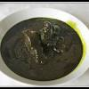

Culture
- Un patrimoine universel
- Musées
- "Culture d’aujourd’hui
- Sites incontournables
La culture de la Tunisie forme une synthèse des différentes cultures amazighe, punique, romaine, juive, chrétienne, arabe, musulmane, turque et française,
qu'elle a intégrées à des degrés divers, ainsi que l'influence des dynasties successives qui ont régné sur le pays.
La Tunisie a en effet été un carrefour de civilisations et sa culture, héritage de quelque 3 000 ans d'histoire, témoigne d'un pays qui, par sa position géographique en plein bassin méditerranéen,
a été au cœur du mouvement d'expansion des grandes civilisations du mare nostrum et des principales religions monothéistes.
Sahara
Magie de la lumière, de l’air vivifiant, des espaces infinis et de la nudité pure des paysages désertiques …
L’appel du Sahara résonne d’autant plus fort que la vie moderne se fait plus étriquée et oppressante.
Le Sahara tunisien se vit dans la contemplation que ce soit dans un luxueux hôtel un campement tout confort ou une tente en plein désert.
Il se vit dans l’aventure à bord d’un 4x4 lancé sur les pistes rocailleuses ou sur la bosse d’un dromadaire.
Il peut se vivre aussi selon les goûts de chacun dans la vitesse et le frisson : les sports extrêmes y trouvent un terrain de choix pour rechercher la performance.
Par son originalité et sa diversité comme par la qualité de ses infrastructures, le Sahara tunisien est la région idéale pour vivre des événements sortant de l’ordinaire..
Saveurs
| Plat cuisine tunisienne | Plat Mloukhia Tunisienne | Ramadan Plat tunisien |
|---|---|---|
 |
 |  |